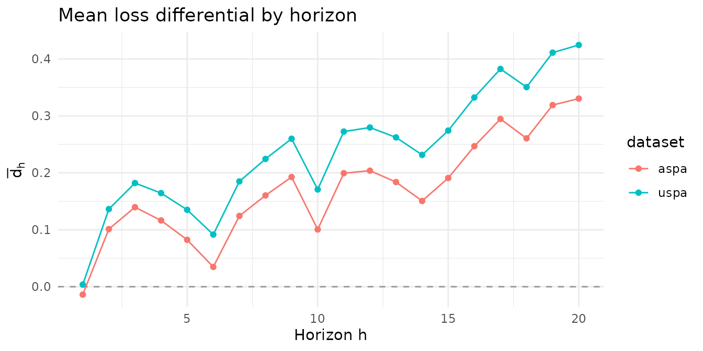

This article demonstrates the two multi-horizon superior predictive
ability tests of Quaedvlieg (2021), implemented in
forecastdom as uspa_mh_test() and
aspa_mh_test(). Both compare a whole path of
forecasts at horizons
rather than each horizon in isolation, and both use a moving-block
bootstrap whose critical values absorb the serial dependence in the
loss-differential path.
- Uniform SPA (). The null is that the benchmark is at least as good as the competitor at every horizon. The test statistic is the minimum of the horizon-wise standardized loss differentials.
- Average SPA (). The null is that the benchmark is at least as good as the competitor on a user-specified weighted average of horizons. The test statistic is the standardized weighted-average loss differential.
The loss differential is
so a positive entry means the benchmark has higher loss (is worse) at horizon . Either null is rejected when the benchmark is worse uniformly (uSPA) or worse on average (aSPA).
library(forecastdom)
data(quaedvlieg2021)
str(quaedvlieg2021, max.level = 1)
#> List of 2
#> $ uspa: num [1:1000, 1:20] 1.189 -5.113 -1.075 -0.631 -3.759 ...
#> $ aspa: num [1:1000, 1:20] 1.171 -5.13 -1.092 -0.649 -3.776 ...The bundled quaedvlieg2021 object holds the two
loss-differential matrices distributed with the paper’s replication
archive: $uspa and $aspa, each
.
Per-horizon picture
Before running the tests it is worth looking at the per-horizon mean loss differentials. The two example matrices are constructed precisely so that they tell the tests apart.
H <- ncol(quaedvlieg2021$uspa)
means <- data.frame(
h = seq_len(H),
uspa = colMeans(quaedvlieg2021$uspa),
aspa = colMeans(quaedvlieg2021$aspa)
)
knitr::kable(
means, digits = 3, row.names = FALSE,
col.names = c("$h$", "uSPA dataset", "aSPA dataset"))| uSPA dataset | aSPA dataset | |
|---|---|---|
| 1 | 0.004 | -0.014 |
| 2 | 0.136 | 0.101 |
| 3 | 0.182 | 0.140 |
| 4 | 0.164 | 0.116 |
| 5 | 0.135 | 0.082 |
| 6 | 0.092 | 0.035 |
| 7 | 0.185 | 0.124 |
| 8 | 0.224 | 0.160 |
| 9 | 0.260 | 0.193 |
| 10 | 0.171 | 0.101 |
| 11 | 0.272 | 0.199 |
| 12 | 0.280 | 0.204 |
| 13 | 0.262 | 0.184 |
| 14 | 0.232 | 0.151 |
| 15 | 0.274 | 0.191 |
| 16 | 0.332 | 0.247 |
| 17 | 0.383 | 0.295 |
| 18 | 0.351 | 0.261 |
| 19 | 0.411 | 0.319 |
| 20 | 0.425 | 0.330 |
$uspa shows positive mean loss differentials at
every horizon, so the benchmark is worse uniformly.
$aspa shows positive means at most horizons but a near-zero
mean at the shortest horizon, so the benchmark is worse on average but
not uniformly.
library(ggplot2)
df <- data.frame(
horizon = rep(seq_len(H), 2),
d_bar = c(colMeans(quaedvlieg2021$uspa),
colMeans(quaedvlieg2021$aspa)),
dataset = rep(c("uspa", "aspa"), each = H)
)
ggplot(df, aes(horizon, d_bar, colour = dataset)) +
geom_hline(yintercept = 0, linetype = "dashed", colour = "grey60") +
geom_line() + geom_point() +
labs(x = "Horizon h", y = expression(bar(d)[h]),
title = "Mean loss differential by horizon") +
theme_minimal()
Uniform multi-horizon SPA
set.seed(1)
uspa_uspa <- uspa_mh_test(quaedvlieg2021$uspa, L = 3, B = 999)
set.seed(1)
uspa_aspa <- uspa_mh_test(quaedvlieg2021$aspa, L = 3, B = 999)
uspa_uspa
uspa_aspa
#>
#> ╭────────────────────────────────────────────────────╮
#> │ Uniform Multi-Horizon SPA Test │
#> │ (Quaedvlieg, 2021) │
#> ├────────────────────────────────────────────────────┤
#> │ H0: Benchmark has uSPA (weakly dominates) │
#> │ H1: Benchmark uniformly worse than competitor │
#> ├┄┄┄┄┄┄┄┄┄┄┄┄┄┄┄┄┄┄┄┄┄┄┄┄┄┄┄┄┄┄┄┄┄┄┄┄┄┄┄┄┄┄┄┄┄┄┄┄┄┄┄┄┤
#> │ Test Results: │
#> │ uSPA statistic: 0.0804 │
#> │ P-value (MBB): 0.0240 │
#> │ Decision: Rejected *** │
#> ├┄┄┄┄┄┄┄┄┄┄┄┄┄┄┄┄┄┄┄┄┄┄┄┄┄┄┄┄┄┄┄┄┄┄┄┄┄┄┄┄┄┄┄┄┄┄┄┄┄┄┄┄┤
#> │ Details: │
#> │ Observations (T): 1000 │
#> │ Horizons (H): 20 │
#> │ Block length (L): 3 │
#> │ Bootstrap replications: 999 │
#> │ Significance level: 0.0500 │
#> ╰────────────────────────────────────────────────────╯
#>
#>
#> ╭────────────────────────────────────────────────────╮
#> │ Uniform Multi-Horizon SPA Test │
#> │ (Quaedvlieg, 2021) │
#> ├────────────────────────────────────────────────────┤
#> │ H0: Benchmark has uSPA (weakly dominates) │
#> │ H1: Benchmark uniformly worse than competitor │
#> ├┄┄┄┄┄┄┄┄┄┄┄┄┄┄┄┄┄┄┄┄┄┄┄┄┄┄┄┄┄┄┄┄┄┄┄┄┄┄┄┄┄┄┄┄┄┄┄┄┄┄┄┄┤
#> │ Test Results: │
#> │ uSPA statistic: -0.2980 │
#> │ P-value (MBB): 0.0751 │
#> │ Decision: Not rejected │
#> ├┄┄┄┄┄┄┄┄┄┄┄┄┄┄┄┄┄┄┄┄┄┄┄┄┄┄┄┄┄┄┄┄┄┄┄┄┄┄┄┄┄┄┄┄┄┄┄┄┄┄┄┄┤
#> │ Details: │
#> │ Observations (T): 1000 │
#> │ Horizons (H): 20 │
#> │ Block length (L): 3 │
#> │ Bootstrap replications: 999 │
#> │ Significance level: 0.0500 │
#> ╰────────────────────────────────────────────────────╯The uSPA test rejects on $uspa (every horizon shows the
benchmark losing) but fails to reject on $aspa at the 5%
level. The reason is that the shortest horizon’s mean is essentially
zero, and the min over standardized horizon-wise means is
pulled down by that single horizon.
Average multi-horizon SPA
With uniform weights the aSPA statistic is the standardized unweighted average loss differential.
w_unif <- rep(1 / H, H)
set.seed(1)
aspa_uspa <- aspa_mh_test(quaedvlieg2021$uspa, weights = w_unif, L = 3, B = 999)
set.seed(1)
aspa_aspa <- aspa_mh_test(quaedvlieg2021$aspa, weights = w_unif, L = 3, B = 999)
aspa_uspa
aspa_aspa
#>
#> ╭────────────────────────────────────────────────────╮
#> │ Average Multi-Horizon SPA Test │
#> │ (Quaedvlieg, 2021) │
#> ├────────────────────────────────────────────────────┤
#> │ H0: Benchmark has aSPA (weighted avg superior) │
#> │ H1: Benchmark worse on weighted average │
#> ├┄┄┄┄┄┄┄┄┄┄┄┄┄┄┄┄┄┄┄┄┄┄┄┄┄┄┄┄┄┄┄┄┄┄┄┄┄┄┄┄┄┄┄┄┄┄┄┄┄┄┄┄┤
#> │ Test Results: │
#> │ aSPA statistic: 3.4075 │
#> │ P-value (MBB): 0.0010 │
#> │ Decision: Rejected *** │
#> ├┄┄┄┄┄┄┄┄┄┄┄┄┄┄┄┄┄┄┄┄┄┄┄┄┄┄┄┄┄┄┄┄┄┄┄┄┄┄┄┄┄┄┄┄┄┄┄┄┄┄┄┄┤
#> │ Details: │
#> │ Observations (T): 1000 │
#> │ Horizons (H): 20 │
#> │ Block length (L): 3 │
#> │ Bootstrap replications: 999 │
#> │ Significance level: 0.0500 │
#> ╰────────────────────────────────────────────────────╯
#>
#>
#> ╭────────────────────────────────────────────────────╮
#> │ Average Multi-Horizon SPA Test │
#> │ (Quaedvlieg, 2021) │
#> ├────────────────────────────────────────────────────┤
#> │ H0: Benchmark has aSPA (weighted avg superior) │
#> │ H1: Benchmark worse on weighted average │
#> ├┄┄┄┄┄┄┄┄┄┄┄┄┄┄┄┄┄┄┄┄┄┄┄┄┄┄┄┄┄┄┄┄┄┄┄┄┄┄┄┄┄┄┄┄┄┄┄┄┄┄┄┄┤
#> │ Test Results: │
#> │ aSPA statistic: 2.4397 │
#> │ P-value (MBB): 0.0040 │
#> │ Decision: Rejected *** │
#> ├┄┄┄┄┄┄┄┄┄┄┄┄┄┄┄┄┄┄┄┄┄┄┄┄┄┄┄┄┄┄┄┄┄┄┄┄┄┄┄┄┄┄┄┄┄┄┄┄┄┄┄┄┤
#> │ Details: │
#> │ Observations (T): 1000 │
#> │ Horizons (H): 20 │
#> │ Block length (L): 3 │
#> │ Bootstrap replications: 999 │
#> │ Significance level: 0.0500 │
#> ╰────────────────────────────────────────────────────╯The aSPA test rejects on both datasets. The slightly
negative
mean of $aspa is more than compensated by positive means at
longer horizons, so the weighted average favours rejection. This is the
power gain Quaedvlieg (2021) emphasises: by aggregating across the
forecast path the average test detects model-level differences that
horizon-by-horizon Diebold-Mariano comparisons miss under the
multiple-testing burden.
Custom weights
Down-weighting short horizons makes the aSPA test even more decisive
against $aspa:
w_down <- c(rep(0, 4), rep(1, 16)) / 16 # zero weight on h = 1..4
set.seed(1)
aspa_mh_test(quaedvlieg2021$aspa, weights = w_down, L = 3, B = 999)
#>
#> ╭────────────────────────────────────────────────────╮
#> │ Average Multi-Horizon SPA Test │
#> │ (Quaedvlieg, 2021) │
#> ├────────────────────────────────────────────────────┤
#> │ H0: Benchmark has aSPA (weighted avg superior) │
#> │ H1: Benchmark worse on weighted average │
#> ├┄┄┄┄┄┄┄┄┄┄┄┄┄┄┄┄┄┄┄┄┄┄┄┄┄┄┄┄┄┄┄┄┄┄┄┄┄┄┄┄┄┄┄┄┄┄┄┄┄┄┄┄┤
#> │ Test Results: │
#> │ aSPA statistic: 2.3237 │
#> │ P-value (MBB): 0.0060 │
#> │ Decision: Rejected *** │
#> ├┄┄┄┄┄┄┄┄┄┄┄┄┄┄┄┄┄┄┄┄┄┄┄┄┄┄┄┄┄┄┄┄┄┄┄┄┄┄┄┄┄┄┄┄┄┄┄┄┄┄┄┄┤
#> │ Details: │
#> │ Observations (T): 1000 │
#> │ Horizons (H): 20 │
#> │ Block length (L): 3 │
#> │ Bootstrap replications: 999 │
#> │ Significance level: 0.0500 │
#> ╰────────────────────────────────────────────────────╯Up-weighting the shortest horizons pulls the statistic back toward zero:
w_up <- c(rep(4, 4), rep(0, 16)) / 16 # all weight on h = 1..4
set.seed(1)
aspa_mh_test(quaedvlieg2021$aspa, weights = w_up, L = 3, B = 999)
#>
#> ╭────────────────────────────────────────────────────╮
#> │ Average Multi-Horizon SPA Test │
#> │ (Quaedvlieg, 2021) │
#> ├────────────────────────────────────────────────────┤
#> │ H0: Benchmark has aSPA (weighted avg superior) │
#> │ H1: Benchmark worse on weighted average │
#> ├┄┄┄┄┄┄┄┄┄┄┄┄┄┄┄┄┄┄┄┄┄┄┄┄┄┄┄┄┄┄┄┄┄┄┄┄┄┄┄┄┄┄┄┄┄┄┄┄┄┄┄┄┤
#> │ Test Results: │
#> │ aSPA statistic: 1.9568 │
#> │ P-value (MBB): 0.0210 │
#> │ Decision: Rejected *** │
#> ├┄┄┄┄┄┄┄┄┄┄┄┄┄┄┄┄┄┄┄┄┄┄┄┄┄┄┄┄┄┄┄┄┄┄┄┄┄┄┄┄┄┄┄┄┄┄┄┄┄┄┄┄┤
#> │ Details: │
#> │ Observations (T): 1000 │
#> │ Horizons (H): 20 │
#> │ Block length (L): 3 │
#> │ Bootstrap replications: 999 │
#> │ Significance level: 0.0500 │
#> ╰────────────────────────────────────────────────────╯Block-length sensitivity
The moving-block bootstrap depends on the block length . The -value is robust over a reasonable range: should be small enough to keep many blocks and large enough to capture the path’s serial dependence.
Ls <- c(2, 3, 5, 8, 12)
sens <- do.call(rbind, lapply(Ls, function(L) {
set.seed(1)
u <- uspa_mh_test(quaedvlieg2021$uspa, L = L, B = 499)
set.seed(1)
a <- aspa_mh_test(quaedvlieg2021$uspa, weights = w_unif, L = L, B = 499)
data.frame(L = L,
uspa_stat = u$statistic, uspa_p = u$pvalue,
aspa_stat = a$statistic, aspa_p = a$pvalue)
}))
knitr::kable(
sens, digits = 3, row.names = FALSE,
col.names = c("$L$",
"uSPA stat", "uSPA $p$",
"aSPA stat", "aSPA $p$"))| uSPA stat | uSPA | aSPA stat | aSPA | |
|---|---|---|---|---|
| 2 | 0.08 | 0.028 | 3.407 | 0.000 |
| 3 | 0.08 | 0.020 | 3.407 | 0.002 |
| 5 | 0.08 | 0.030 | 3.407 | 0.002 |
| 8 | 0.08 | 0.036 | 3.407 | 0.002 |
| 12 | 0.08 | 0.024 | 3.407 | 0.000 |
The statistics are independent of because they depend only on the QS HAC long-run variance, not on the bootstrap, and the -values are stable across for this dataset.
Takeaways
-
uspa_mh_test()rejects only when the benchmark loses at every horizon. It has strong power against uniform underperformance and limited power against horizon-specific failures. -
aspa_mh_test()rejects when the weighted-average differential favours the competitor, even if performance at individual horizons is mixed. The choice of weights determines which part of the forecast path drives the decision. - The moving-block bootstrap is essential. Forecast paths show natural serial dependence, especially when the same model is evaluated at successive horizons.